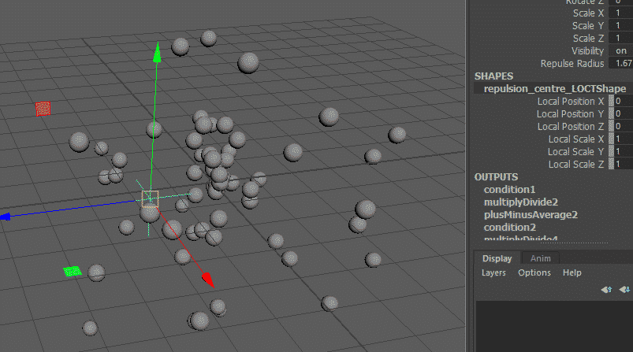

Paya: PyMEL for Riggers
Paya is an object-oriented toolkit for Maya riggers. Unlike other libraries, it doesn’t re-wrap maya.cmds or the
OpenMaya API. Instead, it adds
functionality to PyMEL types at runtime
for an integrated and familiar experience.
Included is the most comprehensive, and intuitive, implementation of maths rigging using Python operators available anywhere, with over 100 methods for linear algebra, trigonometry and more.
Customisation is easy, and goes far beyond PyMEL’s virtual classes system to add support for attribute (including subtype), component and data types with true inheritance for the first time.
New in version 0.4
A brand new toolset for skeletal chains and IK handles, spread across
Joint,IkHandleandChainAdditions to vector and matrix attribute and data types: drive transforms via decomposition, with full accounting for
jointOrient,rotateAxis,inverseScaleand pivots; rotate vectors by axis-angle; and moreImprovements to name management and plug setting
And more!
Example: Rigging a Radial Repulsor
from random import uniform
import paya.runtime as r
from paya.util import pad
def createRadialRepulsor(
repulseRadius=3.5,
swarmRadius=5,
numBees=60,
beeRadius=0.2
):
repLoc = r.spaceLocator(n='repulsion_centre_LOCT')
repLoc.addAttr('repulseRadius', min=0, dv=repulseRadius, k=True)
repulseRadius = repLoc.attr('repulseRadius')
repCentre = repLoc.attr('worldPosition')
for i in range(numBees):
sphere = r.polySphere(
ch=False,
radius=beeRadius,
n='collider_{}_NRSF'.format(pad(i+1, 3))
)[0]
initPosition = r.data.Point([
uniform(-1, 1),
uniform(-1, 1),
uniform(-1, 1)
]).normal() * uniform(0, swarmRadius)
vector = initPosition - repCentre
vector = vector.normal() * vector.length().max(repulseRadius)
(repCentre + vector) >> sphere.attr('t')
from random import uniform
import pymel.core as p
def createRadialRepulsor(
repulseRadius=3.5,
swarmRadius=5,
numBees=60,
beeRadius=0.2
):
repLoc = p.spaceLocator(n='repulsion_centre_LOCT')
repLoc.addAttr('repulseRadius', min=0, dv=repulseRadius, k=True)
repulseRadius = repLoc.attr('repulseRadius')
repCentre = repLoc.attr('worldPosition')
for i in range(numBees):
num = str(i+1)
num = '0'*(3-len(num)) + num
sphere = r.polySphere(
ch=False,
radius=beeRadius,
n='collider_{}_NRSF'.format(num)
)[0]
initPosition = p.datatypes.Point([
uniform(-1, 1),
uniform(-1, 1),
uniform(-1, 1)
]).normal() * uniform(0, swarmRadius)
pma = p.createNode('plusMinusAverage')
pma.attr('operation').set(2)
pma.attr('input3D')[0].set(initPosition)
repCentre >> pma.attr('input3D')[1]
vector = pma.attr('output3D')
db = p.createNode('distanceBetween')
vector >> db.attr('point2')
mag = db.attr('distance')
mdv = p.createNode('multiplyDivide')
mdv.attr('operation').set(2)
vector >> mdv.attr('input1')
for child in mdv.attr('input2').getChildren():
mag >> child
vector = mdv.attr('output')
cond = p.createNode('condition')
mag >> cond.attr('firstTerm')
repulseRadius >> cond.attr('secondTerm')
cond.attr('operation').set(2)
mag >> cond.attr('colorIfTrueR')
repulseRadius >> cond.attr('colorIfFalseR')
mag = cond.attr('outColorR')
mdv = p.createNode('multiplyDivide')
vector >> mdv.attr('input1')
for child in mdv.attr('input2').getChildren():
mag >> child
vector = mdv.attr('output')
pma = p.createNode('plusMinusAverage')
repCentre >> pma.attr('input3D')[0]
vector >> pma.attr('input3D')[1]
pma.attr('output3D') >> sphere.attr('t')